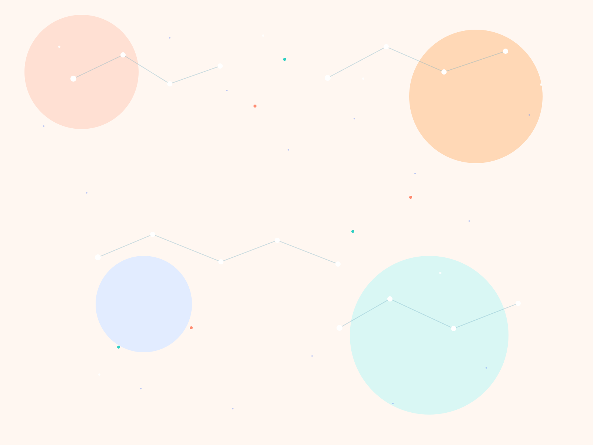

本页重点
最近在把“长期可用”这件事想得更深一点。
不只是怎么把功能做出来，而是几轮需求变化之后，它还能不能继续保持清楚、轻和顺手。
独立开发 / 项目笔记 / 代码与生活
这里是星栈。写一点独立开发，写一点正在打磨的项目，也写一点代码之外的判断和感受。 我更喜欢把事情做得扎实一些，也愿意把过程中真实的犹豫、修正和收获留下来。

最近在打磨
pico-crm 一个想做得轻一点、但能活很久的 CRM。写作偏好
记录过程，而不只记录结果。本页重点
不只是怎么把功能做出来，而是几轮需求变化之后，它还能不能继续保持清楚、轻和顺手。
正在做
一个想做得克制一点、却能陪人用很久的 CRM。
写作方式
记录怎么判断、怎么修正，也记录哪些地方其实走过弯路。
最近三篇
一篇写做事标准，一篇写工作节奏，一篇写 `pico-crm` 的产品边界。它们基本就是我最近这段时间最真实的关注点。
按主题阅读
现在内容还不多，但已经能看出三个主要方向：做事方法、工作节奏、以及围绕 `pico-crm` 的产品判断。
方法与判断
适合想看“怎么判断一件事该不该继续做、该怎么做”的内容。
工作节奏
更偏日常，但其实也和输出质量、学习方式、长期状态都有关。
产品与边界
主要写产品边界、用户场景、以及为什么不想把系统做得越来越重。
关于
我是星栈，也可以把这里理解成一个还在慢慢成形的个人角落。
现在主要在做 `pico-crm` 和一些桌面小工具。比起做一个什么都想覆盖的通用系统，我更想把它们做成可定制、性能高、 维护成本低，而且能继续扩展的产品。
做 `pico-crm` 的原因也很直接。我想做一个真正能按想法继续长下去的 CRM，而不是被通用场景拖得越来越重。 如果能在这个过程中遇到愿意交流想法、一起成长的人，那这件事本身就已经很值得。
我偏好远程工作，也喜欢这种相对安静、能专心把事情想清楚再做下去的节奏。 这个博客之后会长期记录项目迭代、产品判断和开发过程，也把那些真正影响产品走向的取舍慢慢留下来。
关于我
最近记录
不管是公司还是个人，如果没有评价体系和标准，很多努力最后都会变成凭感觉推进。 做到什么算有效，做到什么算偏离，什么时候该继续，什么时候该停下来修正，这些都需要有一套清楚的判断。
我越来越觉得，标准并不是束缚，而是让事情能够长期往前走的地基。对个人来说是成长方式， 对项目来说是演进路径，对团队来说则是协作的共识。
随手记
上午做结构，下午改细节，晚上留给学习。白天把手上的东西做扎实，晚上再去吸收一点新的知识和方法。
项目想法
做 `pico-crm` 让我越来越确认一件事：中小商家不缺一个更复杂的系统，缺的是一个能顺着自己业务长下去的系统。
更多记录
代表项目
这是我最近持续在打磨的项目。它不是想做成一个“什么都能装进去”的大系统，而是希望把客户、线索、 跟进和协作这些核心事情，收进一套干净、轻巧、能往后长的结构里。
目前它已经是一个小 MVP，主要面向中小商家，适合那些希望按自己的行业和业务继续定制、 但又不想一开始就被复杂系统拖住的使用场景。

写下来
它更像一个缓慢整理自己的地方。项目为什么这样做，判断为什么变了，哪一步其实走弯了， 这些东西写下来之后，才会真正变成自己的经验。
一句偏好
联系
现在最直接的公开入口还是 GitHub。以后如果把更多项目笔记和随笔补上，这里会更像一座真的星栈，而不只是主页。